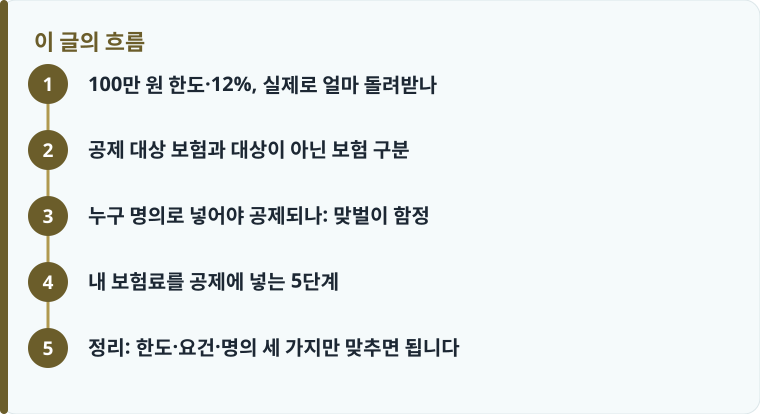

보장성보험료는 연 납입액 100만 원 한도로 12% 세액공제되어 최대 12만 원을 돌려받고, 장애인전용 보험은 별도 100만 원 한도로 15%가 추가 적용됩니다.
계약자가 근로소득자 본인이고 피보험자가 기본공제 대상 부양가족이어야 공제됩니다. 자동차보험료도 이 100만 원 한도에 함께 합산됩니다.
연금저축·저축성보험은 이 항목이 아니며, 소득 있는 배우자를 기본공제로 못 넣으면 그 계약의 보험료는 공제받지 못합니다.
100만 원 한도·12%, 실제로 얼마 돌려받나
연말정산에서 근로소득자가 납입한 보장성보험료는 연 100만 원 한도로 12%를 세액공제받습니다. 한도를 꽉 채워 100만 원을 냈다면 12만 원, 60만 원을 냈다면 7만 2천 원이 산출세액에서 그대로 빠집니다. 소득공제가 과세표준을 줄여 세율만큼만 효과가 나는 것과 달리, 세액공제는 계산된 세금에서 액수를 직접 깎아 주기 때문에 소득이 낮은 사람에게 특히 체감이 큽니다. 월 8만 3천 원 남짓만 보장성보험료로 내도 한도를 채우는 셈이라, 실손·건강·자동차보험을 하나라도 유지 중인 근로자라면 대부분 이미 한도 근처에 도달해 있습니다.
여기서 말하는 보장성보험이란 만기환급금이 납입한 보험료를 넘지 않는 보험을 뜻합니다. 생명보험, 상해보험, 질병보험, 실손의료보험, 자동차보험이 모두 여기에 들어갑니다. 순수보장형이냐 환급형이냐가 헷갈린다면 만기환급형과 순수보장형의 차이를 먼저 정리해 두면 내 계약이 공제 대상인지 판단이 쉬워집니다. 한편 장애인전용 보장성보험은 일반 보장성 한도와 별개로 다시 100만 원 한도에 15%가 적용되어 최대 15만 원까지, 두 항목을 중복으로 받을 수 있습니다. 장애인 가족을 피보험자로 둔 전용 상품이라면 일반 공제와 별도 칸으로 챙겨야 손해가 없습니다.
공제 대상 보험과 대상이 아닌 보험 구분
가장 많이 틀리는 지점이 '연금저축 세액공제'와 '보장성보험료 세액공제'를 한 덩어리로 여기는 것입니다. 둘은 이름만 세액공제일 뿐 완전히 별개 항목이고 한도도 따로입니다. 연금저축은 연 600만 원(퇴직연금 IRP까지 합치면 900만 원) 한도로 총급여에 따라 13.2%에서 16.5%가 적용되는, 노후 대비용 저축 공제입니다. 자세한 계산은 연금저축 세액공제 글에서 따로 다루지만, 핵심은 연금저축에 넣은 돈은 100만 원 보장성 한도와 아무 상관이 없다는 점입니다. 두 항목을 동시에 채우면 그만큼 각각 환급받습니다.
반대로 저축성보험과 연금보험은 이 보장성 공제 대상이 아닙니다. 만기환급금이 납입액을 넘도록 설계된 저축성 상품은 보장이 목적이 아니라 저축이 목적이므로 보장성보험료 칸에 넣을 수 없습니다. 종신보험처럼 보장이 주된 상품은 대상에 들어가지만, 같은 생명보험이라도 저축 비중이 큰 상품은 성격이 달라집니다. 보장 구조 자체가 헷갈린다면 정기보험과 종신보험의 차이를 함께 보면 내 계약이 '보장성'으로 분류되는지 감이 잡힙니다. 정리하면, 만기환급금이 원금 이하면 보장성으로 공제되고, 원금을 넘기면 저축성으로 공제 대상에서 빠진다고 기억하면 됩니다.
또 하나 실무에서 자주 나오는 오해가 카드로 낸 보험료의 중복 공제입니다. 신용카드로 보험료를 결제했더라도 그 금액은 신용카드 사용액 소득공제 대상에 들어가지 않습니다. 즉 보험료는 보장성보험료 세액공제로만 반영되고, 카드 소득공제로 이중으로 잡히지 않습니다. 카드값에 포함됐으니 카드공제도 받겠거니 기대하면 실제 계산과 어긋나므로 주의해야 합니다.

누구 명의로 넣어야 공제되나: 맞벌이 함정
보장성보험료 공제의 핵심 요건은 두 가지입니다. 보험료를 낸 근로소득자 본인이 계약자여야 하고, 피보험자가 기본공제 대상 부양가족이어야 합니다. 기본공제 대상이란 소득요건(연간 소득금액 100만 원 이하, 근로소득만 있으면 총급여 500만 원 이하)과 나이요건을 충족해 내 부양가족으로 올릴 수 있는 사람을 말합니다. 그래서 소득이 있는 성인 자녀나 부모를 피보험자로 둔 보험은, 그 가족이 내 기본공제 대상이 아니라면 내가 보험료를 냈어도 공제받지 못합니다. 계약서상 명의만 보고 넣었다가 요건에서 걸러지는 경우가 여기서 나옵니다.
맞벌이 부부는 특히 조심해야 합니다. 계약자가 본인이고 피보험자가 배우자인 보험은 원칙적으로 공제 대상이 될 수 있지만, 소득이 있는 배우자를 내 기본공제 대상으로 올리지 못하면 그 보험료는 공제되지 않습니다. 배우자에게 총급여 500만 원을 넘는 근로소득이 있으면 상대의 기본공제 대상이 될 수 없기 때문입니다. 그래서 맞벌이라면 부부가 각자 자기가 계약자인 보험료를 각자 연말정산에 넣는 것이 원칙이자 가장 안전합니다. 한쪽이 배우자 명의 보험까지 몰아 넣으려다 요건 불충족으로 통째로 빠지는 것보다, 각자 100만 원 한도를 따로 활용하는 편이 부부 합산 환급액을 키웁니다.
놓치기 쉬운 항목이 자동차보험료입니다. 자동차보험도 엄연히 보장성보험료라서 이 100만 원 한도에 합산됩니다. 실손·건강보험만 챙기고 자동차보험을 빠뜨리는 경우가 흔한데, 자동차보험료만으로도 연 100만 원을 훌쩍 넘기는 가정이 많으므로, 오히려 한도를 자동차보험 하나로 채우고 있을 수도 있습니다. 보험금 수령 단계에서 세금이 함께 얽히는 구조가 궁금하다면 수익자 지정과 세금 글도 함께 참고하면 납입과 수령 양쪽의 세무 그림을 맞출 수 있습니다.
작성·검수 기준
이 글은 특정 보험상품이나 절세 상품을 권유하기 위한 것이 아니라, 연말정산에서 보장성보험료 세액공제를 적용할 때 알아야 할 일반적인 기준을 설명하기 위해 작성했습니다. 세액공제 한도와 공제율, 부양가족 요건은 세법 개정에 따라 달라질 수 있으므로, 실제 신고 전에는 국세청 홈택스 연말정산 간소화 자료와 최신 안내를 반드시 확인하시기 바랍니다.
본인의 구체적인 공제 가능 여부와 금액은 소득·부양가족 상황에 따라 달라지므로, 판단이 어려운 경우 국세청 상담이나 세무 전문가의 상담을 받는 것이 가장 정확합니다. 항목별 차이가 헷갈린다면 연금저축 세액공제 글로 별도 한도까지 함께 확인해 두는 것을 권합니다.
내 보험료를 공제에 넣는 5단계
실제로 연말정산에 반영하려면 아래 순서대로 확인하면 빠짐없이 챙길 수 있습니다.
- 내가 계약자로 납입 중인 보험을 모두 모으고, 각 상품이 만기환급금이 납입액 이하인 보장성보험인지(저축성·연금보험은 제외) 확인합니다.
- 각 보험의 피보험자가 내 기본공제 대상 부양가족인지, 소득·나이 요건을 충족하는지 점검합니다.
- 자동차보험료를 빠뜨리지 않고 포함해, 연간 납입 합계가 100만 원 한도 안에 어떻게 배분되는지 계산합니다.
- 장애인전용 보장성보험이 있으면 일반 한도와 별도 칸(100만 원·15%)으로 나눠 입력합니다.
- 맞벌이라면 부부가 각자 계약분을 각자 연말정산에 넣고, 홈택스 간소화 자료와 실제 납입내역이 일치하는지 대조한 뒤 신고합니다.
정리: 한도·요건·명의 세 가지만 맞추면 됩니다
보장성보험료 세액공제는 복잡해 보이지만 핵심은 세 가지로 압축됩니다. 첫째 연 100만 원 한도에 12%(최대 12만 원, 장애인전용은 별도 15%)라는 숫자, 둘째 계약자 본인·피보험자 기본공제 대상이라는 요건, 셋째 맞벌이는 각자 계약분을 넣는다는 명의 원칙입니다. 연금저축과는 별개 한도라는 점, 자동차보험도 합산된다는 점만 놓치지 않으면 대부분의 근로자가 매년 손쉽게 환급을 챙길 수 있습니다.
다른 보험 정보 글이 궁금하다면 보험지식 블로그에서 이어 읽어 보세요. 가입 전에는 반드시 약관과 상품설명서를 확인하는 것이 가장 안전한 방법입니다.